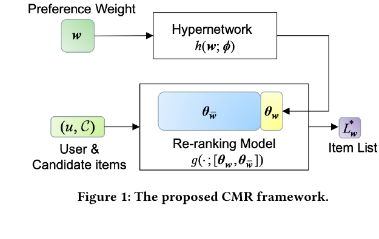
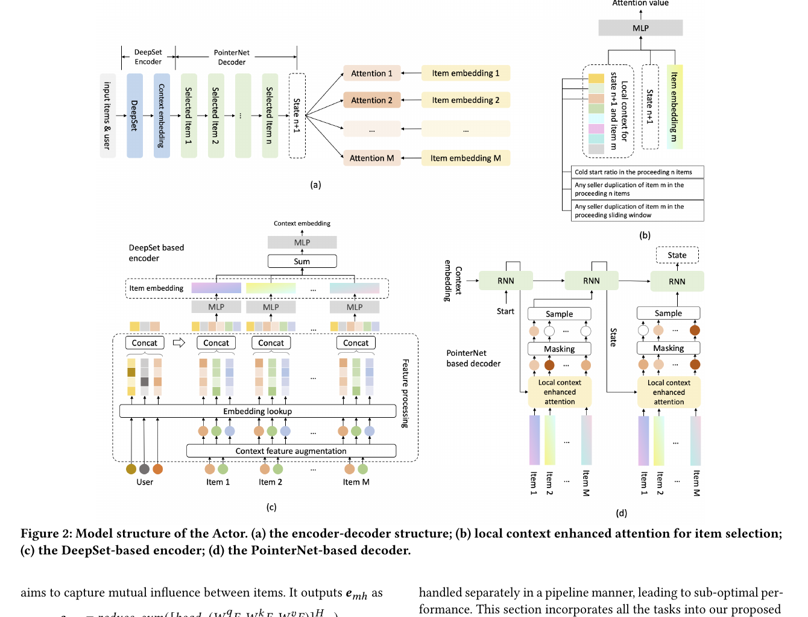
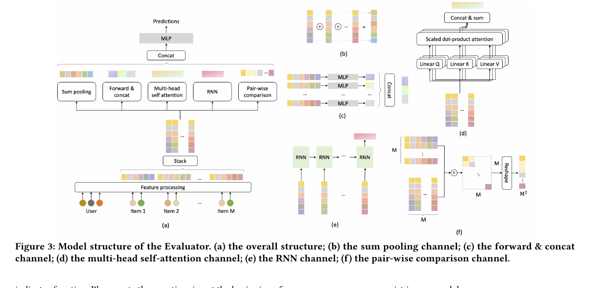
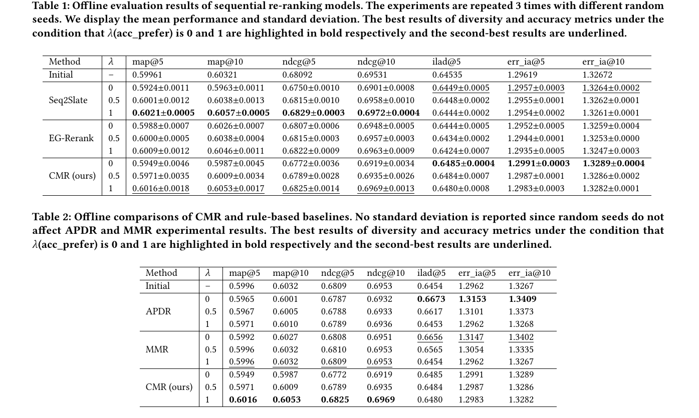
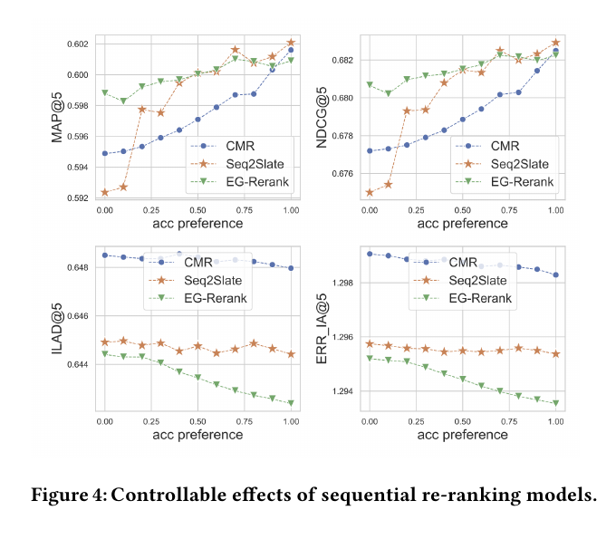
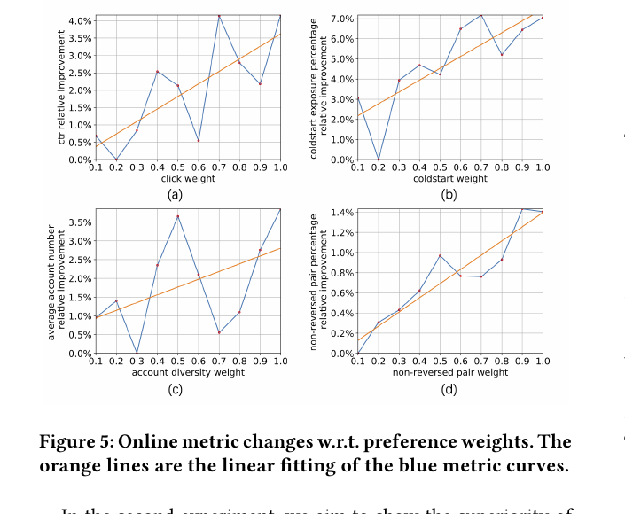
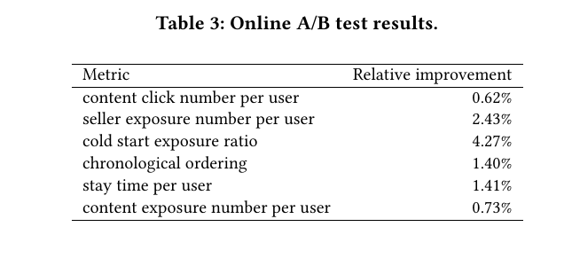

CMR
1. 基本信息
- 标题：Controllable Multi-Objective Re-ranking with Policy Hypernetworks
- 作者：Sirui Chen, Yuan Wang, Zijing Wen, Zhiyu Li, Changshuo Zhang, Xiao Zhang, Quan Lin, Cheng Zhu, Jun Xu
- 机构：Renmin University of China, Alibaba Group
- 时间：2023
- 会议：KDD 2023
- arXiv：https://arxiv.org/abs/2306.05118
- DOI：https://doi.org/10.1145/3580305.3599796
- 代码：https://github.com/lyingCS/Controllable-Multi-Objective-Reranking
- 本地 PDF：
C:\Users\chaol\Desktop\推荐论文阅读\re-ranking\CMR-Controllable-Multi-Objective-Re-ranking-with-Policy-Hypernetworks.pdf - 笔记位置：
论文笔记/重排/可控多目标/CMR.md - 分类：重排 / 可控多目标
2. Vault 内相关论文与笔记关系
- 推荐系统重排最新进展：该调研把 CMR 放在“可控多目标重排”路线里，作为静态线性权重无法适应线上环境变化的代表解法。
3. 一句话总结
CMR 把多目标重排里的偏好权重 从“训练前固定的超参数”变成“线上可输入的控制信号”：hypernetwork 根据 生成重排模型中一小部分 -sensitive 参数，让同一个重排模型在不重新训练的情况下适配不同准确率、多样性、冷启动曝光、排序业务规则等目标权衡。
4. 论文在解决什么问题
工业推荐通常是多阶段链路：召回先从海量物料里取候选，ranking 给候选估相关性，final-stage re-ranking 再生成最终曝光列表。重排层和前面 point-wise ranking 不同，它必须显式处理列表级上下文，例如相邻 item 是否重复、是否满足多样性、是否照顾冷启动或新内容、是否保证某些固定位置插入。
传统多目标重排最常见的做法是线性标量化：
其中 是一个列表级 utility， 是该目标的偏好权重。问题在于，已有方法通常在离线训练时就固定 ，线上 serving 时不能随意改。如果业务想在大促期间提高冷启动曝光，或对不同用户群配置不同权重，常规做法需要重新训练或维护多套模型，代价高且响应慢。
CMR 的目标不是重新发明某一个 utility，而是解决“同一个重排模型能否支持任意给定偏好权重”的问题。它假设 utility 计算方式仍然是预定义的，但 可以作为变量输入模型。
论文强调动态调权有三个现实价值：
- 快速调参：避免每组权重都训练一次模型。
- 快速响应环境变化：节日、大促、供需变化时可以立即改变推荐策略。
- 用户分群差异：不同用户群或业务场景可以用不同 ，但不必部署多套完整模型。
5. CMR 框架
5.1 Figure 1：用 hypernetwork 生成偏好相关参数

Figure 1 是 CMR 的核心抽象。输入有两类：
- 用户和候选集 ，送入普通 re-ranking model。
- 偏好权重 ，送入 hypernetwork 。
hypernetwork 不直接生成整套重排模型参数，因为工业模型可能非常大，论文提到现代 DNN re-ranking model 可能达到 50GB、数百亿参数。CMR 把模型参数拆成两部分：
- ：对偏好权重敏感的小部分参数，由 hypernetwork 生成，通常可以是最后几层或轻量模块。
- ：对偏好不敏感的大部分参数，例如 embedding 层和 representation learning 层，保持为普通模型参数。
这样做的隐藏前提是：不同偏好权重主要需要改变模型的决策头或少量策略参数，而不需要重写整个候选表示系统。这个假设很工程化，因为它让已有线上模型可以只改一小段结构接入 CMR。
给定 后，CMR 实际运行的是：
训练时随机采样 ，让模型见到不同偏好组合；服务时直接输入业务想要的 ，模型就生成对应列表。论文明确说：线上如何选择最优 不在本文范围内，CMR 只保证给定 后模型能响应。
5.2 Conditional training：训练时模拟不同线上环境
CMR 借鉴 Conditional GAN 的思路做 conditional training。每个训练样本或 batch 先采样一个偏好权重 ，再由 hypernetwork 生成 ，重排模型生成列表 ，最后用 评价该列表并更新参数。
这个训练流程值得注意的是： 可以来自业务经验，也可以来自简单的均匀分布。论文为了测试泛化能力，实验里尽量少用先验，让每个 utility 的权重独立从 采样。
从直觉上看，CMR 学到的不是单点权重下的最优模型，而是一个“从偏好权重到策略参数”的函数。它的优势来自 amortization：训练一次后，把很多可能的权重组合压进同一个 hypernetwork。
6. AE 重排模型
CMR 框架可以套在任意多目标 re-ranking model 上。为了给工业任务提供可验证 testbed，论文又设计了一个 Actor-Evaluator (AE) 重排模型：Actor 负责生成列表，Evaluator 负责评估列表 utility。
6.1 Figure 2：Actor = DeepSet encoder + PointerNet decoder

Figure 2 有四个子图：
(a)总体是 encoder-decoder。输入是用户和候选 items，输出是逐步选择出来的列表。(b)是 local context enhanced attention。它不是只看当前 item embedding，还把当前状态和当前 item 的局部业务上下文拼进去。(c)是 DeepSet encoder。它对候选集合的输入顺序不敏感。(d)是 PointerNet decoder。它每一步从候选集中指向并采样一个 item。
Actor 的第一步是 feature augmentation 和 embedding lookup。候选 item 不只用自身特征，还加入候选集内相对特征，例如该 item 在候选集内按历史 CTR 排第几。这是一个轻量但很关键的补充，因为它把“item 相对于当前候选集合的位置关系”显式提供给模型。
论文选择 DeepSet 做 encoder，是因为复杂场景里很难保证初始列表顺序就是好顺序。如果 encoder 对输入顺序敏感，差的初始顺序可能污染重排模型；DeepSet 把候选当作集合，更符合“由 生成列表”的设定。上下文 embedding 是：
其中 是候选数， 是候选 item 特征， 是用户向量。这里 的输出也作为每个 item 的 embedding 。
Decoder 基于 PointerNet，每一步选一个 item，并立即更新状态。第 步的 item 选择概率来自 local context enhanced attention：
这里 是当前 decoder state， 是候选 item embedding， 是“当前状态 + 当前 item”的局部上下文，例如当前 item 如果加入列表，会不会造成 seller duplication、前面 个位置是否已经有同类 seller、冷启动比例是否被破坏。
这个局部上下文是论文很实用的设计。模型当然也可以靠深层网络隐式学出 seller duplication，但业务规则往往是明确的，把这些局部特征直接塞进 attention 输入更高效，也更稳定。
Masking 有两个作用：
- 已经被选过的 item 不能再选，所以 attention 置零。
- 固定位置插入时，除了目标 item 外其他 attention 置零，从而强制某个位置选指定 item。
Actor 还需要探索，因此论文用 Thompson Sampling 按 masked attention value 比例采样 item，而不是每次贪心取最大值。
6.2 Figure 3：Evaluator 用五个 channel 看列表

Evaluator 的输入是生成后的列表 和用户 ，输出是一个或多个 user-list engagement 预测，作为 utility 的一部分。Figure 3 把 evaluator 拆成五条 channel：
(b)sum pooling：对 item embedding 求和，得到整体列表表征。(c)forward & concat：逐 item 做 MLP，再拼接，保留每个位置的局部信息。(d)multi-head self-attention：建模 item-item 相互影响。(e)RNN：捕捉列表顺序演化趋势。(f)pair-wise comparison：用 item pair 内积显式比较任意两项关系。
最终预测为：
这个 evaluator 不只是在做一个黑盒打分器，而是在刻意覆盖列表质量的不同视角：集合整体、位置局部、两两交互、序列趋势、显式 pairwise 比较。它适合做 AE 框架里的列表评估器，因为 Actor 生成的不是单个 item，而是完整列表。
7. 业务 utility 设计
论文把真实业务导向任务归成四类：flow control、diversity、group ordering、fixed-position insertion。这个部分不是附录性质，而是解释 AE model 为什么比传统 pipeline 更适合作为 CMR testbed：这些任务在 pipeline 里通常被分开处理，容易局部最优；AE 模型可以把它们放进同一个列表生成和评估过程。
7.1 Flow control：控制某组内容曝光比例
Flow control 要保证某些 group 获得足够曝光，例如冷启动内容、新商家内容或公平性保护 group。最直接的 utility 是：如果每页里 group 的曝光比例没有超过阈值 ，就给惩罚。
论文先给出 page-level 版本：
这里 是一页或一个列表， 是 batch， 是属于 group 的 item 集合。前面的负号很重要：违反曝光要求会得到 penalty，而不是 reward。
但 page-level 版本太严，因为业务上通常关心总体曝光比例，不要求每一页都达标。因此论文加了 batch-level gating：只在 batch 总体曝光比例不达标时，才惩罚单页不达标。
如果用户是从上往下逐项消费列表，底部 item 可能根本没被看见，那么只算曝光比例还不够，论文又加了位置项，约束 group item 的平均曝光位置。这说明 CMR 的 utility 不是抽象指标，而是会贴近信息流/货架类产品的可见性问题。
7.2 Diversity：滑动窗口内避免同类重复
Diversity 要求相邻 item 来自不同 group，例如不同 seller、category、供给来源或展示类型。论文的 utility 是：
其中 是位置 的 item group， 是位置 前面一个滑动窗口里的 group 集合。窗口长度 决定 diversity 是局部约束还是全列表约束；当 时，它鼓励 whole-list diversity。
这比简单的全局品类计数更贴近用户体验，因为重复内容最明显的问题往往发生在相邻几个位置，而不是整个列表层面。
7.3 Group ordering：让高优先级 group 靠前
Group ordering 处理“某些 group 应该更靠前”的需求，例如新发布 3 天内的商品优先展示。论文通过 item pair 的 group priority 来定义：
这个 utility 不直接要求某个 group 占比，而是看列表中的 pair 是否符合优先级顺序。它适合表达“新内容在旧内容之前”这类软排序规则。
7.4 Fixed-position insertion：必须插到指定位置
Fixed-position insertion 是最硬的任务。例如用户从某个 trigger item 进入推荐场景时，业务要求该 trigger item 必须在列表顶部。
论文特别指出，这个任务不能简单地先生成列表再把 trigger item 插到顶部，因为后插入可能破坏其它目标。例如 trigger item 和原列表第一项来自同一 seller，会立刻破坏 diversity。把它写成 utility 也不够，因为 utility 很难保证 100% 概率。因此 CMR 在 Actor 的选择阶段用 masking 强制指定位置选择目标 item。
这个设计解释了为什么 fixed-position insertion 属于生成过程约束，而不是 evaluator 里的软奖励。
8. 训练目标
Evaluator 先用监督学习训练，目前论文只训练 classification model，损失是 cross entropy：
Actor 再用 REINFORCE-based 方法训练。对用户 和候选集 ，Actor 生成列表：
其中 表示候选集里的第 个 item 放在输出列表第 位。Actor loss 是：
是日志中真实曝光列表， 相当于 advantage。也就是说，如果 Actor 生成列表的加权 reward 高于日志曝光列表，就提高这条采样轨迹的概率；反之降低。
这里有两个容易误解的点：
- 来自 Eq. (1) 的 attention 分布，是 Actor 每一步选中该 item 的概率。
- 论文默认每个 action 对同一个列表级 advantage 等权贡献，没有进一步做 per-step credit assignment。作者承认 PPO 等更复杂方法可用，但他们使用的 REINFORCE 版本已经足够，并观察到 gradient clipping 对训练帮助很大。
9. 实验和结果
9.1 离线实验设置
论文的离线实验基于 LibRerank 和公开 Ad 数据集。原始 Ad 数据集包含 100 万用户、2600 万条广告展示/点击日志、8 个用户画像特征和 6 个 item 特征；LibRerank 按用户浏览广告的时间戳切成 ranking lists，最终有 349,404 个 item 和 483,049 个 lists。
第一组问题是：CMR 能否套到不同 sequential re-ranking model 上？论文把 Seq2Slate、EG-Rerank 和自己提出的 AE model 都放进 CMR 框架里，测试 accuracy preference 下的效果。
第二组问题是：CMR 相比 rule-based controllable baselines 如何？对照 APDR 和 MMR。
离线目标扩成 accuracy + diversity。Accuracy 指标用 MAP@5、MAP@10、NDCG@5、NDCG@10；diversity 指标用 ILAD@5、ERR_IA@5、ERR_IA@10。论文提醒，MAP/NDCG 是偏 greedy relevance 的指标，AE 模型真正优化的是 evaluator 预测的 list-wise user engagement，因此线上强的 AE 模型可能在 MAP/NDCG 上看起来不占优。
这里的离线可控实验不是直接把 ILAD/ERR_IA 当最终表格指标塞进 loss，而是先用 LambdaMART ranker 生成初始列表，再把 LibRerank 的单一 accuracy 目标扩成 accuracy + diversity。论文定义第 个选择动作带来的 diversity reward 为增量 ERR_IA：
Actor 的训练目标再写成 。因此 Table 1/2 里的 是 accuracy preference： 偏 accuracy， 偏 diversity。这个定义解释了为什么 Figure 4 中 accuracy 指标和 diversity 指标随 呈相反方向变化。
9.2 Table 1/2：CMR 可控，但不是所有指标都赢

Table 1 的关键信号是：当 从 0 增加到 1，accuracy 指标整体上升，diversity 指标整体下降，说明 CMR 确实能响应偏好权重变化。
几个值得记的数字：
- Seq2Slate 在 时 accuracy 最强，MAP@5 为 0.6021，NDCG@5 为 0.6829。
- CMR 自己的 AE model 在 时 diversity 最强，ILAD@5 为 0.6485，ERR_IA@5 为 1.2991，ERR_IA@10 为 1.3289。
- CMR 在 时 MAP@5 达到 0.6016、NDCG@5 达到 0.6825，接近 Seq2Slate，同时保留更高的 diversity。
Table 2 的结论更微妙：APDR/MMR 在 diversity 指标上更强，尤其 APDR 在 时 ILAD@5 为 0.6673、ERR_IA@5 为 1.3153，都高于 CMR；但这些规则方法在 accuracy 上被限制住，CMR 在 时 MAP@5 0.6016、MAP@10 0.6053、NDCG@5 0.6825、NDCG@10 0.6969 都更高。
所以论文不是声称 CMR 在所有离线指标上碾压规则方法，而是强调它能突破 rule-based 方法的表达上限，在 accuracy-diversity trade-off 上提供更平滑、可学习的控制。
9.3 Figure 4：偏好权重真的能控制指标方向

Figure 4 横轴是 accuracy preference，纵轴是对应 metric。上面两张图是 MAP@5 和 NDCG@5，下面两张是 ILAD@5 和 ERR_IA@5。
图里最应该注意的是趋势而不是单点数值：
- accuracy preference 越高，MAP/NDCG 越高；
- diversity metric 越低，说明系统确实在用 diversity 换 accuracy；
- CMR 曲线最平滑，特别是 diversity 下降趋势清楚，说明它更像一个连续可控模型，而不只是三个离散权重点的偶然结果。
这张图是 CMR 论文最核心的实验证据之一：它支撑“线上可以通过 改变模型行为”的主张。
9.4 在线实验：淘宝 Subscribe 场景
在线实验在淘宝 App 的 “Subscribe” 场景中做，入口是淘宝首页顶部的 Subscribe 按钮，内容流包含商品列表、poster、coupon 等多种元素。
第一组在线实验测试：线上指标是否会随对应 preference weight 改变。论文从四类业务任务中各选一个代表：
- flow control：保证 cold start 内容曝光比例。
- diversity：提升列表中的 seller account 数量。
- group ordering：把更多新内容排到前面。
- click utility：提升用户 engagement。
- fixed-position insertion：用 masking 保证 trigger content 在列表顶部。
9.5 Figure 5：线上权重和指标大体正相关

Figure 5 的蓝线是实际 metric curve，橙线是线性拟合。结果显示，随着某个 utility 的权重上升，对应线上指标整体上升。四个指标的可调范围不同，大约从 1.4% 到 7%。
论文也保留了一个限制：蓝线并不完全单调，作者主要归因于数据稀疏，因为线上实验只用了少量 App traffic，避免伤害真实用户体验。当前 CMR 在线模型输入 20 个 item、输出 10 个 item，也限制了指标可调范围；作者说后续会扩大 input size。
9.6 Table 3：端到端 AE 模型优于多年手调 pipeline

第二组在线实验比较 CMR 与淘宝线上已有 pipeline。baseline pipeline 包括：
- 先预测每个 content 的点击概率，形成初始列表。
- 加 freshness bias，让新内容更靠前。
- 用启发式 diversity 算法提升 seller diversity。
- 插入 cold start 内容。
- 最后把 trigger content 放到列表顶部。
这套 baseline 的超参数已经人工调了多年。CMR 则用一个端到端 AE re-ranking model，把这些 utility 放进同一个模型中训练，线上手动调 preference weights。
7 天 A/B 结果里，CMR 直接建模的前四个指标都提升：
- content click number per user：+0.62%
- seller exposure number per user：+2.43%
- cold start exposure ratio：+4.27%
- chronological ordering：+1.40%
另外两个没有直接建模的指标也提升：
- stay time per user：+1.41%
- content exposure number per user：+0.73%
论文把后两项称为 AE-based re-ranking model 的副产物。我的理解是：列表级 joint optimization 可能减少了 pipeline 各模块之间的互相破坏，所以不仅直接 utility 涨了，用户整体消费强度也跟着改善。
10. 结论、限制和记忆点
CMR 的贡献可以拆成两层：
- 框架层：用 policy hypernetwork 把 preference weights 映射到 re-ranking model 的一部分参数，实现不重训的动态多目标控制。
- 模型层：提出一个 AE-based re-ranking model，把 flow control、diversity、group ordering、fixed-position insertion 和 click utility 放进同一个端到端列表生成框架。
它最适合记成工业重排里的“可控多目标”路线：不是只优化一个固定目标，也不是每个业务目标单独堆规则，而是把业务目标写成 utility，把偏好权重作为线上控制输入。
需要保留的限制：
- CMR 不解决线上最优 如何自动选择，仍需要业务或外部调参系统给定权重。
- 离线实验中 CMR 并非所有指标都优于规则方法，尤其纯 diversity 指标上 APDR/MMR 更高。
- 线上曲线不完全单调，说明实际系统中的数据稀疏、流量规模和模型输入长度会限制控制精度。
- 当前方法依赖预定义 utility，utility 写得不好时，hypernetwork 只能学会响应错误目标。
记忆锚点：
- 问题：静态线性标量化无法支持线上快速改多目标权重。
- 核心机制：，只生成重排模型的一小部分偏好敏感参数。
- 训练方式：随机采样 做 conditional training，让一个模型覆盖多个权衡点。
- Actor：DeepSet 消除候选输入顺序敏感，PointerNet 逐步选 item，local context attention 显式接入业务上下文。
- Evaluator：五通道列表评估器，从 sum、position、self-attention、RNN、pairwise 五个角度看列表质量。
- 线上意义：在淘宝 Subscribe 场景，CMR 替代多年手调 pipeline，并在 7 天 A/B 中提升点击、seller 曝光、冷启动曝光、时间顺序等指标。
11. 图表覆盖检查
- 设计图：Figure 1 policy hypernetwork 框架、Figure 2 Actor、Figure 3 Evaluator 均已嵌入并解释。
- 主结果表：Table 1/2 离线 accuracy-diversity 对照、Table 3 淘宝 Subscribe 线上 A/B 均已覆盖。
- 消融/线上图表：Figure 4 偏好权重控制曲线、Figure 5 线上权重-指标曲线均已解释；本文没有单独的模块消融表。